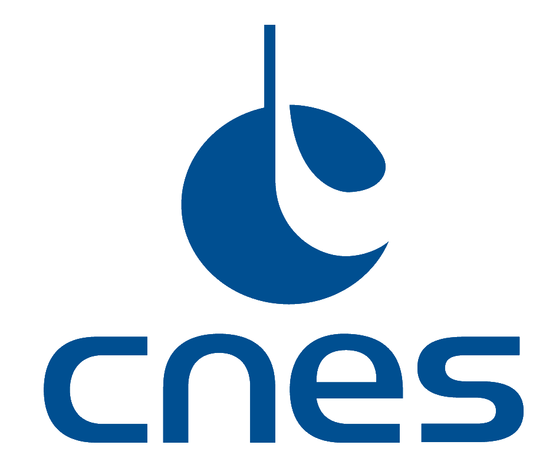
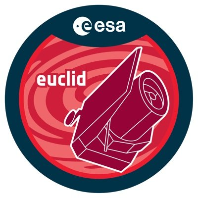

Welcome to my home page !
Hubert Bretonnière



I'm a 3rd year PhD student in astrophysics, specialised on the development of Machine Learning tools for cosmology and galaxy science. I've worked two years in the Canary Islands (IAC), and I'm now working in Paris, at the IAS and APC.
Galaxy Simulation for Euclid
I've adapted a Deep Learning algorithm called FVAE (Flow-Variational-AutoEncoder) to simulate realistic galaxies to be used on the Euclid pipeline. We used them to predict the number of interesting galaxies Euclid will be able to resolved, to do galaxy science. The VAE is conditionned to physical parameter so that you can simulate galaxies with the properties you want !
Blending segmentation
I'm developping another Deep Learning algorithm called Probabilistic U-Net to predict probabilistic segmentation maps of galaxies, with a particular attention on overlapping galaxies, called blended galaxies.
Analysis of the Euclid
Morphology Challenge
I have the lead on the analysis of a Challenge concerning the fitting of galaxies properties. We are analysing the performances of six different algorithms which were asked to predict the morphological parameters of different simulation of large galaxy fields. I have also simulated one of the field using our FVAE.